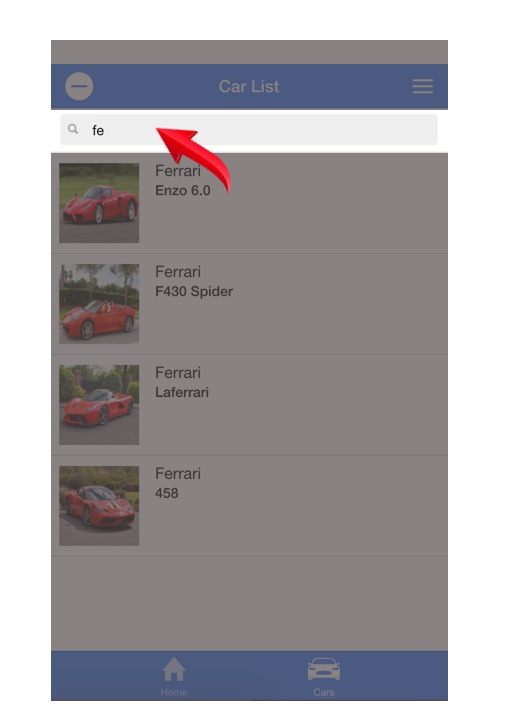

Aim:
To create a car searching web app that demonstrates the power and functionality of AngularJS
Objectives:
AngularJS is a “JavaScript based front end web app framework” (En.wikipedia.org, 2017) developed by google that specialises in development of single page applications (SPA’s). AngularJS is open source which means its free to use, amend and develop across the web, but the core feature of the framework is to create dynamic interactive websites with the HTML using an MVC structure… we’ll get onto this later on.
The idea of the project came from wanting to create a small single page application, as a developer my main focus has been HTML and CSS and JavaScript has taken a back seat on some of my projects. Through research of JavaScript web applications, a few different libraries were taken into consideration but after reading the Skills Deck Summit 2016
It stated that 20% of tech companies are using AngularJS beating the likes of Magento and JQuery. This not only solidified my choice to learn AngularJS but also gave me a sense of hope that the topic I am learning is widely used and meaningful to the digital tech industry.
With the concept of the web application already in place, a purpose had to be established and it was that week we were visited by Auto trader as part of our UX class, which gave me an idea to merge AngularJS with my love of cars to create a car search app
Starting this project, I had no experience in web applications. In terms of design and usability I knew I could get the app looking great but coding using the AngularJS framework my knowledge was zero to none. But this was a challenge I was ready to embark upon, learning something completely new and create a demonstrator that I didn’t know was even going to work. But I was ready for the challenge.
To set up the AngularJS app, a few things were needed. First a code editor, my personal choice was using brackets, both HTML 5 and CSS 3 were used from the start but the AngularJS library was added into the Head through the Google CDN. Once these tools were in place it was time to get coding.
The Special One

Ionic is a “open source hybrid mobile app development” (En.wikipedia.org, 2017) that works with extremely well with AngularJS to create modern, usable and creative web apps. Ionic provides mobile components, typography and a wide range of themes and widgets to make any project into a real life app.
As you can see below, two versions of the car search app were created. One using pure CSS and one using the ionic framework. You can see the difference Ionic makes on the layout and style of the page to make it into a real application
Never the less, both versions of the web app have the same AngularJS functionality and both work effectively. Although the responses from users really like the style and layout the Ionic framework brings with it, along with some other interesting.
The Model, View, Controller or “MVC” in short is the design pattern and backbone of each AngularJS web app. Each component has a vital role within the development environment and cannot function on its own. Here’s a more detailed look.

The model is a plain JavaScript object that lives in the controller. This is where all the information is where car data Is stored that is seen in the View.
The view is where both the model and controller comes together and the information is displayed in the view. The view is created in the document object model (DOM) which in this case is the HTML.
The controller is the most important component of the three, this is where all the logic is entered for different features of the app. The controller is a simple JavaScript class with a ($scope). The scope with the “dollar sign” is what binds the controller and the view and this ($scope) is needed each time a new controller is added.
SEARCH ITEM
FAVOURITE ITEM
DELETE ITEM
For the evaluation, I think this project was a success. In terms of learning, enjoyment and o overall effectiveness of the final demonstrator. From not knowing a line of AngularJS at the start, the end result was amazing and the learning process to get to the end was interesting and made me want to learn more. Codeacademy was a priceless tool that helped me grasp the basics of AngularJS, such as directives and expressions which then went into creating a larger product.
The AngularJS car search app delivered to its aim and objectives. Creating a fully functional dynamic web application that can be expanded with more and more car data and still work efficiently. In future I would love to work on this app more and create another page where all the favourite cars are stored.
Using AngularJS was a really fun experience, it creates a very interactive environment from a very plain HTML document. This is also a great advantage when using AngularJS, as it “modifies the DOM instead of adding extra code within the HTML”(Novosiolov, 2017) and this makes it much faster and efficient
En.wikipedia.org. (2017). AngularJS. [online] Available at: https://en.wikipedia.org/wiki/AngularJS [Accessed 14 Mar. 2017].
En.wikipedia.org. (2017). Ionic (mobile app framework). [online] Available at: https://en.wikipedia.org/wiki/Ionic_(mobile_app_framework) [Accessed 14 Mar. 2017].
Novosiolov, A. (2017). AngularJS advantages and limitations | SoftElegance's Blog. [online] Blog.softelegance.com. Available at: http://blog.softelegance.com/angularjs/angularjs-advantages-and-limitations/ [Accessed 14 Mar. 2017].